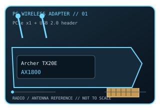

[ MODEL-SPECIFIC PC WI-FI HARDWARE ]
TP-Link Archer TX20E AX1800 Wi-Fi 6 PCIe Adapter
Dual-band 2×2 Wi-Fi 6 and Bluetooth 5.2 client card for desktop PCIe slots. This record documents the named model and its labeled revision scope; it is not a claim that similarly named variants share identical drivers or radio limits.

IDENTIFICATION: Match the full product name, model label and hardware revision with its manufacturer page before choosing a driver. Regional channel and OS support can vary.
Dedicated wireless specifications
| Cataloged product | TP-Link Archer TX20E AX1800 Wi-Fi 6 PCIe Adapter |
|---|---|
| Wi-Fi generation / standards | Wi-Fi 6 (IEEE 802.11ax), backward-compatible with 802.11a/b/g/n/ac. |
| Radio bands, channels & width | 2.4 GHz and 5 GHz. 2.4 GHz uses 20/40 MHz channels; 5 GHz uses up to 80 MHz (AX1800 class). Typical U.S. channel sets are 1–11 at 2.4 GHz and 36–165 at 5 GHz; region, DFS rules, hardware revision and driver control the usable subset. |
| Spatial streams / nominal link rates | 2×2 MIMO; up to 574 Mb/s at 2.4 GHz and 1,201 Mb/s at 5 GHz (nominal AX1800 PHY class, not throughput). |
| Host interface | PCI Express x1 host card (also fits longer compatible PCIe slots); Bluetooth 5.2 requires the included cable to an internal USB 2.0 header. |
| Antenna arrangement | Two detachable external dual-band antennas supplied with the card. |
| Operating-system compatibility | Windows 11/10 (64-bit) per current product information; select the driver for the card’s exact hardware revision. Do not infer support for other OS releases from the PCIe fit. |
| Bluetooth | Bluetooth 5.2 over the separate internal USB connection; it is not carried over PCIe WLAN lanes. |
| Regulatory channel note | No 6 GHz radio. Channel numbers and DFS availability vary by regulatory domain and the installed driver; use the country-approved channel list for the host region. |
Model-specific installation notes
AX1800 class combines separate-band nominal PHY rates; a single client associates on one band at a time. The desktop card uses a radio module and needs the Bluetooth USB-header connection for the Bluetooth function.
2 external antennas are shown in this model’s source documentation. Install only with the correct host connector and driver package; antenna placement, local regulation and access-point capabilities affect operation.
Manufacturer sources
- Archer TX20E official product specificationsOfficial manufacturer source for product specifications, revision-specific software, or compatibility requirements.
- Archer TX20E manufacturer downloads and revision supportOfficial manufacturer source for product specifications, revision-specific software, or compatibility requirements.
Source pages may describe a hardware family or provide revision-selected downloads. Manufacturer regional restrictions and current OS support take precedence over generic interface fit.